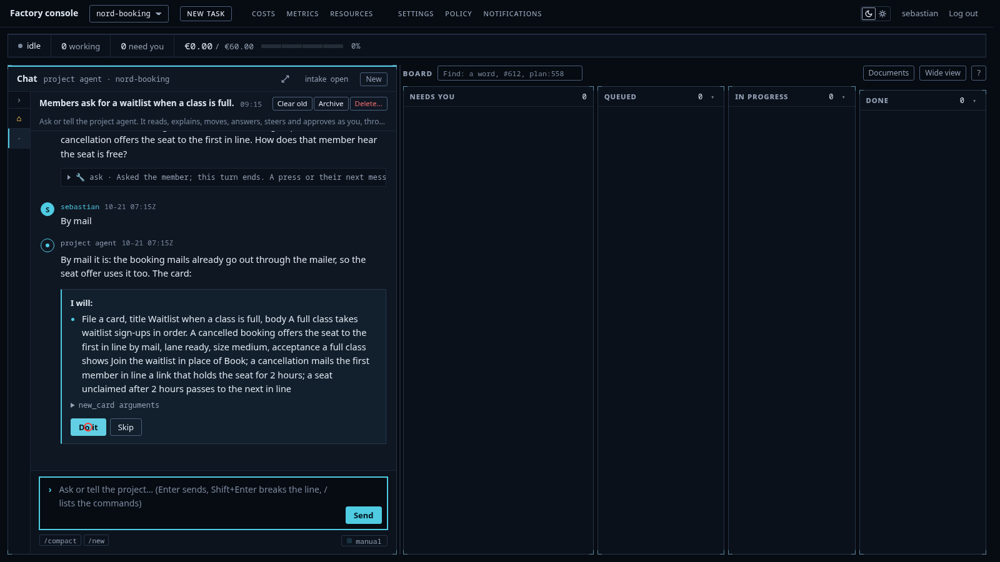

The sandbox
gVisor, non-root, read-only root, no service account token, the metadata address blocked, default-deny egress, an egress probe before the agent starts, the write token minted after the agent is dead and used once.
Source available · Self-hosted · Sandboxed agents
Write a roadmap. The factory turns it into cards and builds them. Each card runs in its own sandbox on your own servers. Nothing merges until the checks pass.
Run it on your servers. Use hosted models or your own.

That holds while it works. What it writes still has to pass the gates.
Each card runs in its own sandbox. When the card is done, the sandbox is deleted.
The sandbox cannot see the machine it runs on. It runs in gVisor, as a non-root user, on a read-only root, with no service account token. The cluster's metadata address is blocked.
The sandbox cannot reach the internet on its own. Its network is closed. It reaches the outside only through the tools the factory gives it, and each tool talks to one named host. Before the agent starts, a probe checks that the network is closed.
The agent never holds a push token. When the agent is done, the factory kills every other process in the pod, then mints a write token, pushes once, and revokes it.
Every model call costs money, and the money is capped. The gateway reserves the price of a call before the call runs. There are caps per task, per day, per month and per project. At a cap the factory stops and asks you: fund it, or end it.
So the agent can break its sandbox. We do not care. It cannot break anything else.
We have no prompt rules for safety. A prompt rule is a request to the model. A closed network is a fact.
One risk stays. The model can write code that is wrong on purpose, and that code can pass the checks and reach your app. No system rules that out, short of a model you host and trust. The review, the hold-out tests and the audit all read the diff and make it hard. They do not make it impossible, and this page says so.
Built for teams that cannot sign off a hosted coding agent: regulated industries, and companies where security and compliance decide the purchase.
The source is published. You read it, you run it on your own servers, and the licence says what you may do with it.
The repository holds the Terraform for the tested Hetzner setup. You add the infrastructure credentials and the model and tool keys your setup uses, then follow the deployment guide. The page does not promise a time or a server size until an engineer who did not build the factory has installed it and we have the numbers.
Model calls go through one gateway. Point it at a hosted API or at your own model. The factory has completed tasks on self-hosted models, and the evidence page links one.
Everything you configure is a file in your repository. The development process is a set of YAML files. Your project's prompts are its own AGENTS.md. The caps are numbers in a file.
roadmap, plan, card, sandbox, pull request, gates, merge, deploy, issue or alert, next card
gVisor, non-root, read-only root, no service account token, the metadata address blocked, default-deny egress, an egress probe before the agent starts, the write token minted after the agent is dead and used once.
Nine kinds of stage. Four of them stay in every process, and a process file cannot remove them. A deleted or weakened test is a finding. A review that gives no verdict is a finding on the reviewer's card. A separate session writes hold-out tests that no sandbox can see. When a hold-out fails, an audit names the defective side: the test, the code or the spec.
The hold is taken under a database lock. The model's output is clamped to the amount held. The real cost is booked after the call. A missing cap reads as zero, which stops all spend.
One durable workflow per task. Thirteen detectors watch each session for no write, repetition, the same failure, the same call, flip-flop, churn, wall clock and spend with no push. A stalled session gets a nudge, then a supervisor, then a fresh session on the stronger model. A human sees it only after the session cap.
Every guarantee lives in a schema, a check, a gate or a route. A prompt rule is the last resort.
The factory builds itself. Every commit carries the task, the session, who asked and who approved.
An outsider's issue is screened for injection before any session runs.
The console was designed by image models and an independent critic. Every image has its sidecar.
The factory is the bottom layer: sandboxes, workflows, gates. It works out of the box.
The development process is the middle layer. It is a set of YAML files: the lanes, the stages, the merge rule. We ship a spec-driven process. If you want another, write your own. Four stages stay in every process, and no file can remove them.
Your prompts are the top layer. They live in your project's AGENTS.md. We seed it from our template. You change it.
The coding harness runs behind one interface. Today there is one adapter, opencode.
The metrics page keeps the four DevOps delivery metrics: deployment frequency, lead time for changes, change failure rate and time to restore. It also keeps cost per card, per project and per week. All of them read from the same ledger as the board. We tune the process against them.
A table of guarantees, not of features. The market sweep of 29 September 2026 scored 148 tools. Every cell is rechecked against the vendor's own page before this goes public; cells we have not verified say so.
| Guarantee | This factory | GitHub Copilot cloud agent | Cursor cloud agents | Devin | GitLab Duo Agent Platform | OpenHands | Factory |
|---|---|---|---|---|---|---|---|
| The control plane runs on your servers, source published | Yes. Self-hosted on rented commodity servers, source published. No commercial product we surveyed rebuilds the control plane from Git. | No. | No, workers only. | No, sandbox only. | Partial. Self-hosts with its own models, paid licence. | Yes, open core. | No. |
| Your own model behind the same gateway, with a recorded run | Yes. Hosted APIs and self-hosted models sit behind one gateway. The evidence page links a run on a self-hosted model. | No, hosted model list. | No, hosted models. | No, its own models. | Partial, its own model list on self-hosted. | Any API key, no published run. | Not verified. |
| The agent never holds a push token | Yes. A fresh identity per task, minted after the agent is dead, used once, revoked. | No, repository secrets. | Not verified. | Not verified. | No, composite identity, token up to about 3 days. | No, shared pool key. | Not verified. |
| The money is held before each call, and at the cap it asks | Yes. The hold is taken under a database lock. At a cap: fund or end. | No, org budgets. | No, the cap is not instant. | No, session and cycle limits. | No, credits ledger. | Not verified. | Not verified. |
| A fix must fail at base and pass at head | Yes. An issue or an alert files the fix card. The gate runs the repro command at base and at head. | Not surveyed. | Partial, Automations fire on Sentry and PagerDuty. | Not surveyed. | Not surveyed. | Not surveyed. | Not verified. |
| The gates run the tests the criteria name, and a file cannot lower the floor | Yes. Nine stage kinds, a floor of four no process file can remove. Among the 148 tools surveyed, none runs the named tests and requires them green. | Not surveyed. | Not surveyed. | Not surveyed. | Not surveyed. | Not surveyed. | Not verified. |
| The process is a set of YAML files | Yes. Lanes, stages, merge rule. Ours is spec-driven; bring your own. | Not surveyed. | Not surveyed. | Not surveyed. | Not surveyed. | Not surveyed. | Not verified. |
| Delete everything and rebuild from Git and a bucket | Yes. Rehearsed on 13 October. | No. | No. | No. | Not verified. | Not surveyed. | Not verified. |
Chat intake and model independence stay out of the table: every hyperscaler sells a gateway and 78 of 148 tools score high on chat.
The open limits live in the threat model: the hosted model APIs see diffs and briefs, the Go module proxy is a covert channel of a few hundred bytes per request, gVisor is not a microVM, and the model can write code that passes the checks.
| Lines of Go | 233,425 |
| Outside tests | 94,277 |
| Files | 487 |
| Test files | 279 |
| Test functions | 2,940 |
| Commits since 24 September | 3,467 |
Recounted on the day the page goes public.